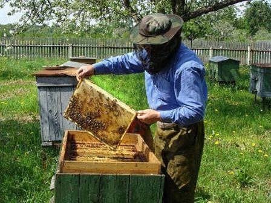
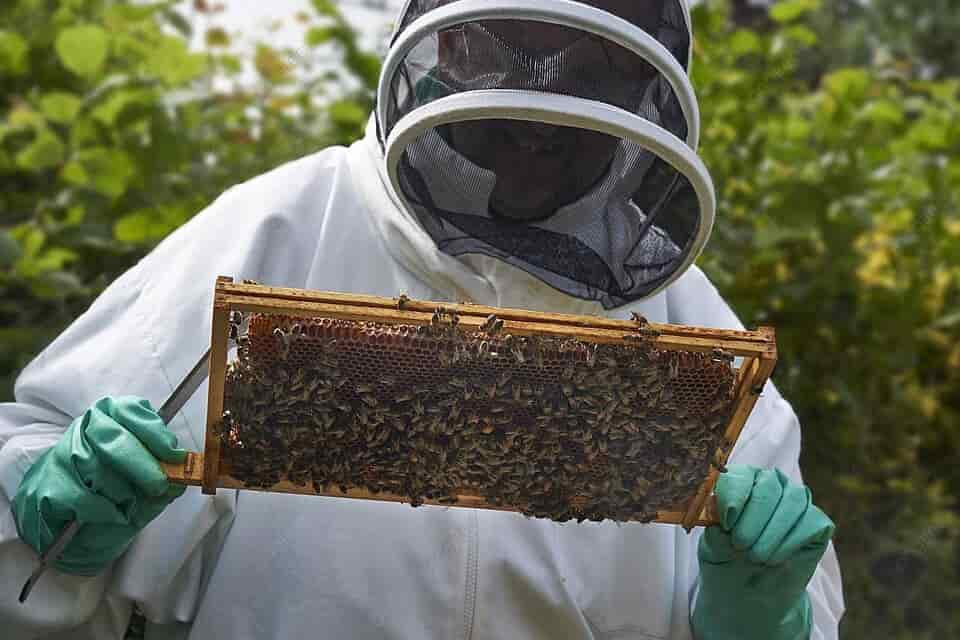
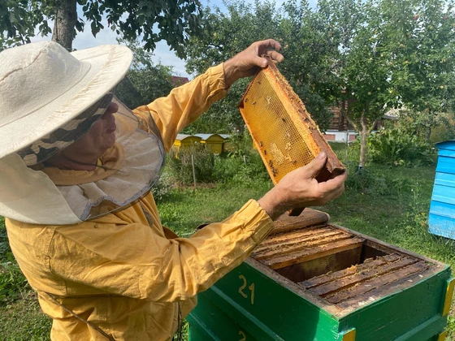

Осмотр ульев
Осмотр улья - это одна из важнейших процедур в пчеловодстве, которая позволяет пчеловоду оценить состояние пчелиной семьи, здоровье пчёл и улья, а также принять необходимые меры для поддержания их процветания. Вот подробнее о целях, методах и основных аспектах осмотра ульев:
Цели осмотра ульев:
Основная цель осмотра ульев заключается в поддержании здоровья и процветания пчелиной семьи. Это важная процедура, которая позволяет пчеловоду оценить состояние своих пчёл и улья, выявить проблемы и принять меры для их решения. Осмотр ульев помогает предотвратить развитие болезней, контролировать разведение пчёл, а также обеспечивать оптимальные условия для производства мёда.

Зачем проводить осмотр ульев:
Осмотр ульев необходим для раннего обнаружения проблем и заболеваний, которые могут повлиять на здоровье и продуктивность пчел. Пчеловод может выявить такие проблемы, как отсутствие матки, недостаток корма, наличие болезней или паразитов. Это позволяет принимать меры по их устранению, прежде чем они станут серьёзными.

Что смотрят при осмотре ульев:
При осмотре ульев пчеловод обращает внимание на множество факторов, включая:
Количество и активность пчёл: Оценивается плотность и активность пчелиной популяции. Недостаточное количество пчёл может указывать на проблемы с размножением или здоровьем пчел.
Состояние сот и рамок: Проверяется наличие яиц, личинок, корма и запасов мёда в сотах. Это позволяет определить, как развивается пчелиная семья и нуждается ли она в дополнительном кормлении или управлении разведением.
Признаки болезней и паразитов: Обнаруживаются признаки инфекций, паразитов или других проблем, таких как гниль, миазы и плесень. Пчеловод должен быть внимателен к изменениям во внешнем виде пчёл, наличию отклонений в развитии семьи или аномалий в состоянии улья.

Осмотр ульев - это не только процедура контроля, но и возможность для взаимодействия с пчёлами и понимания их потребностей. Регулярные и внимательные осмотры позволяют пчеловоду быть в курсе всех аспектов жизни пчелиной семьи и принимать меры для её поддержания и развития.